ANVIL en detalle
Cada función de la app, con capturas reales y lo esencial de cómo se usa.
Torneo por etapas
Del evento a la inscripción, todo en un mismo lugar, guardado en el celu.
- Tus eventos: torneos, prácticas y juntadas en una sola lista.
- Inscripción con peso corporal y club.
- Categoría IWF calculada automáticamente.
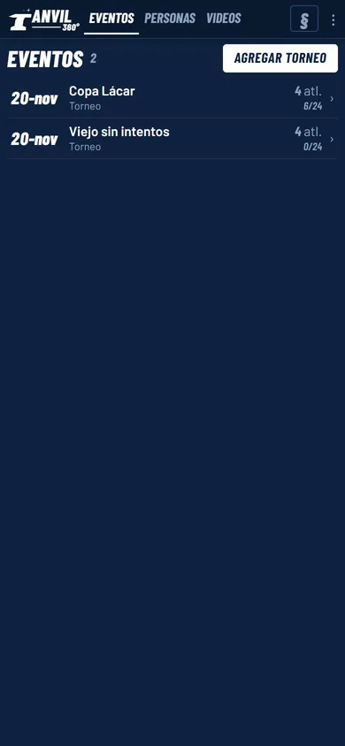
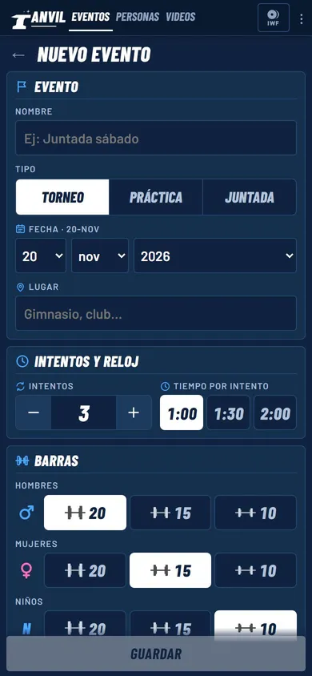
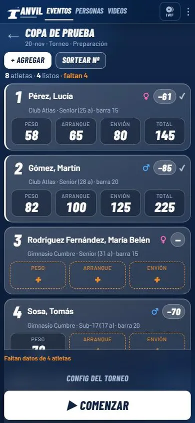
Competencia
Un levantador a la vez, con el juez, las banderas y el cronómetro en pantalla.
- Juez con banderas blanca o roja, en 2D, 3D o luces.
- Orden de salida por barra ascendente.
- Discos en la barra y cronómetro.

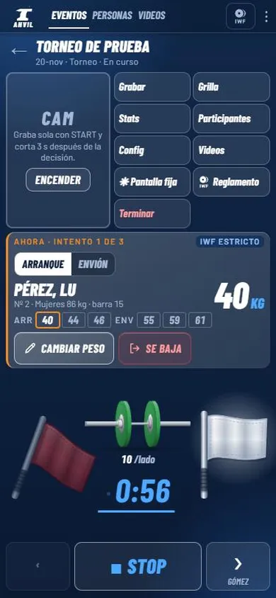
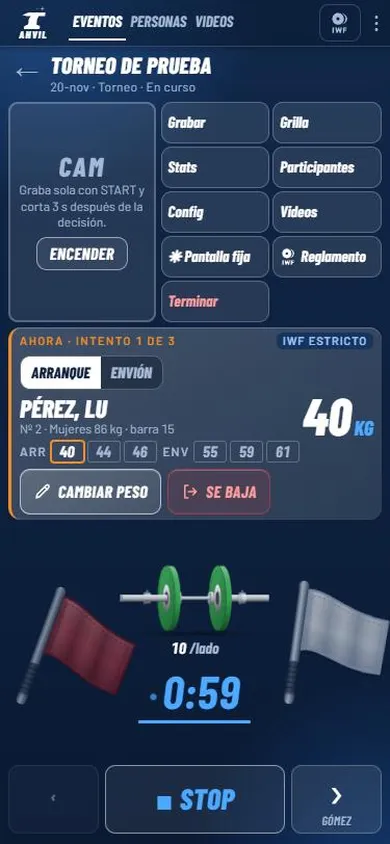
Ficha del competidor
Cada atleta tiene su ficha con los intentos y sus videos.
- Datos del atleta, categoría y club.
- Video de cada intento, con atleta, peso y decisión.
- Filtros por atleta, válidos o nulos.

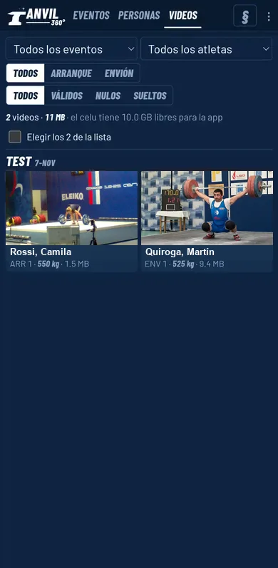
Grilla y resultados
Los intentos se marcan en la grilla y los resultados salen solos.
- Blanco válido, rojo nulo. Tocá un intento para corregirlo.
- Resultados por categoría y ranking por club.
- Exportá a CSV.


Torneos de ejemplo
Para probar la app sin cargar nada: cuatro torneos ya listos.
- París 2024, categoría +102 kg.
- Tres finales de Tokio 2020.
Fuente de los resultados: publicados por la IWF.
Reglamento IWF
El reglamento a mano, sin salir de la app.
- Índice a un toque.
- Buscador para encontrar el artículo que necesitás.
- Modo dedos grandes: botones y texto más grandes para tocar con facilidad.

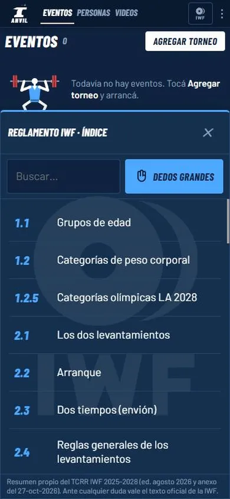
Skins
Cinco estilos para la app. Cambialos desde ⋮ → Estilo.
Clásico
El look base de ANVIL, sobrio y directo.
Glass
Paneles translúcidos sobre fondo oscuro.
Metal
Tonos grises y acero, para un look de gimnasio.
Griego
Motivos clásicos para la competencia.
Vikingo
Un estilo con carácter, en la grilla y la competencia.

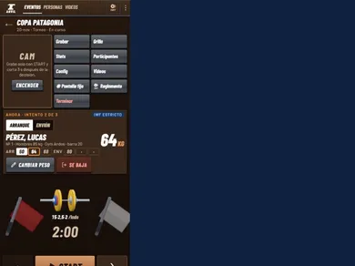
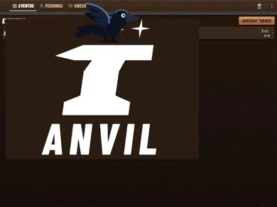
Novedades
Lo que cambió en cada versión, sin salir de la app.
- Novedades desde el menú ⋮.
- Avisos cortos para lo importante.
- Changelog completo por versión.
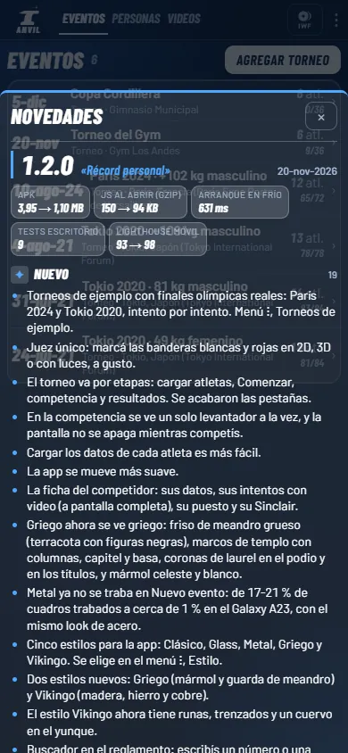
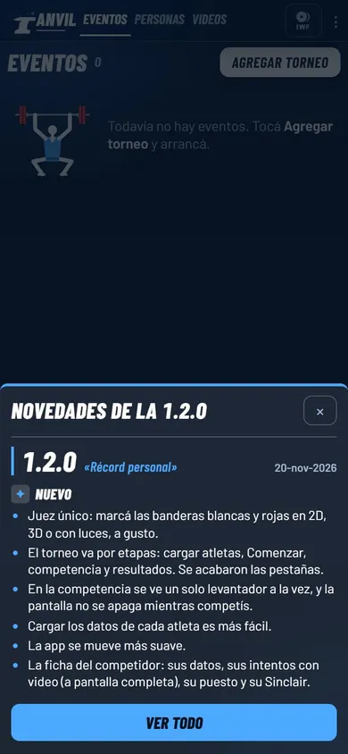
Liviana y rápida
Pensada para correr bien en celus de gama media.
- APK de 1,1 MB.
- 0,6 s de arranque en gama media.
- Scroll fluido en listas largas.